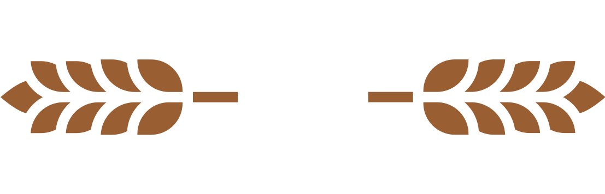

How We Make Our Bread .
From the flour to the display at our bakeries, we perform each step with love and care.
We work with local farmers, supporting sustainable practices.
We use hand kneading, pressing and stretching the dough.
Sweet and savory products are baked right in our bakeries.
Every morning, you can buy fresh goods at our bakeries.